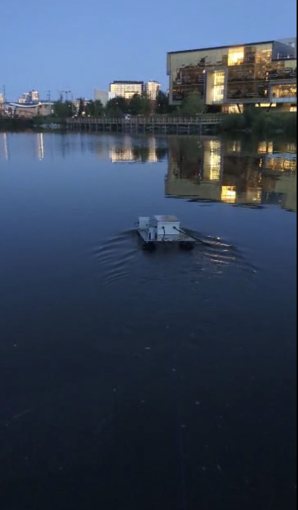
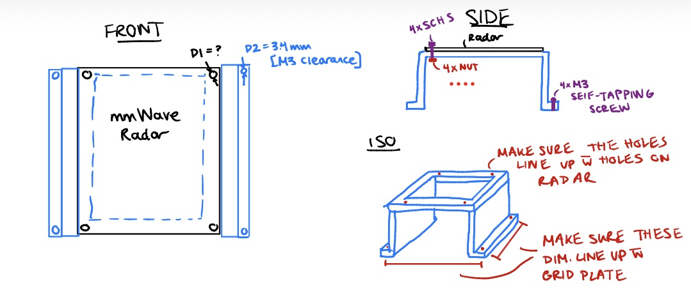
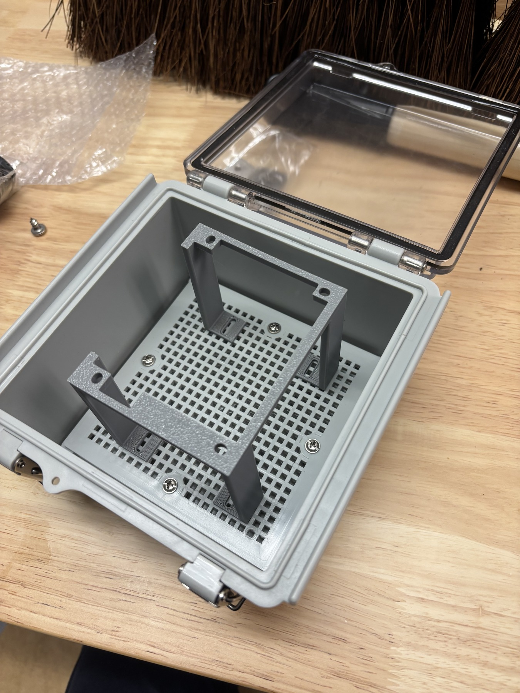
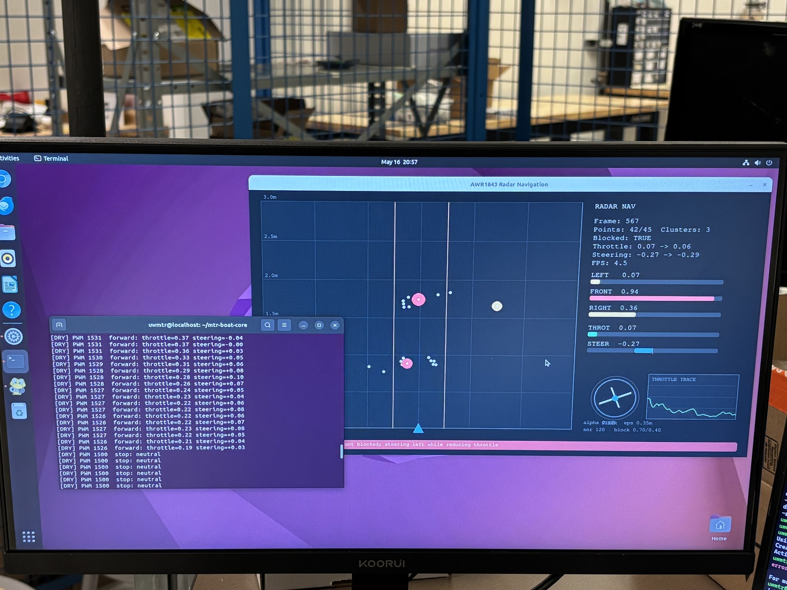

From browser control to waypoint autonomy
I built a browser-based control interface for manual operation, then added a map workflow where an operator could select a waypoint and send the robot there autonomously.
GNSS position and a 9-axis BNO055 absolute heading estimate drove differential thrust through an ESP32. The system was tested on the water in both manual and autonomous modes.

The software and embedded stack I owned
GNSS + BNO055
Parsed position, heading, and speed data; replaced the 6-axis MPU6050 with a calibrated 9-axis BNO055 for absolute direction.
1M+ training steps
Trained a reinforcement-learning waypoint policy using synthetic range observations, with reward shaping for obstacle avoidance and target approach.
Four hardware interfaces
Connected GNSS over UART, the IMU over I2C, a USB camera, Ethernet LiDAR, and an ESP32 responsible for dual-thruster output.
Fail-safe control
Added stale-data and serial-timeout handling that returns thrust commands to neutral rather than allowing the previous command to persist.
Turning noisy mmWave detections into steering decisions
The TI mmWave radar produced raw point clouds with reflections and inconsistent detections. I decoded the binary UART frames, evaluated SNR and spatial filters, then grouped detections using density-based clustering and temporal hysteresis.



The custom mount fixed the sensor against the clear face and recovered most of the lost detections. Cluster scores were then converted into steering, throttle, and stop commands in small-scale navigation tests.
Rewriting the controller as ROS 2 nodes
The early prototype was a monolithic program: practical for moving quickly, but one sensor or serial failure could affect the whole controller. As software lead, I rewrote the stack around isolated ROS 2 nodes and explicit message boundaries.
This made navigation, sensors, perception, and thruster control independently testable. It also gave the team a cleaner path for current camera, stereo-vision, and LiDAR experiments.
A working platform, with the hardest perception problem still open
The robot is sealed, controllable, and capable of autonomous waypoint navigation. The remaining challenge is not simply detecting a person; it is distinguishing normal swimming from distress over time. Current work evaluates live camera perception, tracking, stereo depth, and LiDAR as a testing reference without assuming that every sensor belongs on the final robot.